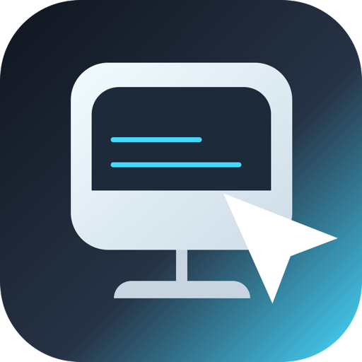

Controlla il tuo Mac da iPhone, iPad o da un altro Mac.
Per problemi, domande o segnalazioni scrivi a supporto@sebdemichelis.dev.
Ultimo aggiornamento: 16 agosto 2026
MacPortal non raccoglie, non trasmette e non conserva alcun dato personale. Non esistono server, account o servizi gestiti dallo sviluppatore: l'app apre soltanto una connessione diretta dal tuo dispositivo al tuo Mac.
Tutti i dati restano sul dispositivo:
| Dato | Dove vive | Perché |
|---|---|---|
| Nome, indirizzi e porta dei Mac salvati | Database locale dell'app, in un App Group condiviso con widget e Control Center | Elencare e raggiungere i tuoi Mac |
| Nome utente del Mac | Stesso database locale | Precompilare l'autenticazione |
| Password del Mac | Solo Portachiavi del dispositivo, accessibile solo a dispositivo sbloccato | Autenticare la sessione |
| Nome della rete Wi-Fi associato a un indirizzo | Database locale | Provare per primo l'indirizzo valido sulla rete corrente |
| Preferenze (qualità, appunti, blocco app) | Impostazioni locali dell'app | Ricordare le tue scelte |
La password non viene mai scritta nel database, nelle impostazioni o nei log, e non viene mai letta dalle estensioni widget e Control Center.
L'unico traffico generato dall'app è la connessione al Mac, verso l'indirizzo e la porta che indichi tu (5900 per impostazione predefinita). Quel traffico va dal tuo dispositivo al tuo Mac, direttamente: non passa da alcun relay o intermediario. Facoltativamente, se lo richiedi, l'app invia un pacchetto Wake-on-LAN nella rete locale.
Non c'è nessun'altra richiesta di rete: niente analitiche, niente telemetria, niente segnalazione di errori, niente pubblicità, nessun SDK di terze parti che trasmetta dati.
L'app usa la libreria open source RoyalVNCKit per il protocollo VNC. Viene eseguita in locale e non invia dati a nessuno.
Eliminando una connessione si cancella anche la password associata dal Portachiavi. Disinstallando l'app si rimuovono tutti i dati locali.
Ultimo aggiornamento: 17 agosto 2026
MacPortal è un'app gratuita. Usandola accetti quanto segue.
Puoi installare e usare MacPortal sui dispositivi che ti appartengono o che gestisci, per accedere a Mac su cui sei autorizzato ad accedere. La licenza è personale e non esclusiva: l'app resta di proprietà dello sviluppatore, non te ne viene ceduta la titolarità.
Sei tu responsabile dell'uso che ne fai e del rispetto delle regole della rete e dei sistemi a cui ti colleghi.
MacPortal si limita ad aprire una connessione diretta al computer che indichi tu. Non fornisce accesso remoto di per sé: non crea tunnel, non aggira router né firewall, e non funziona se il dispositivo non raggiunge già il Mac in rete. Non esistono account, server o servizi gestiti dallo sviluppatore, quindi non c'è nulla che possa essere sospeso o revocato da remoto.
L'app è fornita "così com'è", senza garanzie di alcun tipo, esplicite o implicite, comprese quelle di funzionamento ininterrotto, assenza di difetti o idoneità a uno scopo specifico. Nei limiti consentiti dalla legge, lo sviluppatore non risponde di danni, perdite di dati o mancati accessi derivanti dall'uso dell'app.
Restano ferme le tutele inderogabili che la legge riconosce ai consumatori: nulla in questi termini intende limitarle.
L'app è sviluppata e mantenuta a titolo personale. L'assistenza è offerta quando possibile e senza tempi garantiti, e non c'è alcun impegno a pubblicare aggiornamenti o a mantenere la compatibilità con versioni future dei sistemi operativi.
Questi termini possono cambiare insieme all'app. La versione valida è quella pubblicata su questa pagina, con la data di aggiornamento indicata in alto.
Si applica la legge italiana. Per le controversie con i consumatori resta competente il foro del luogo di residenza o domicilio del consumatore.